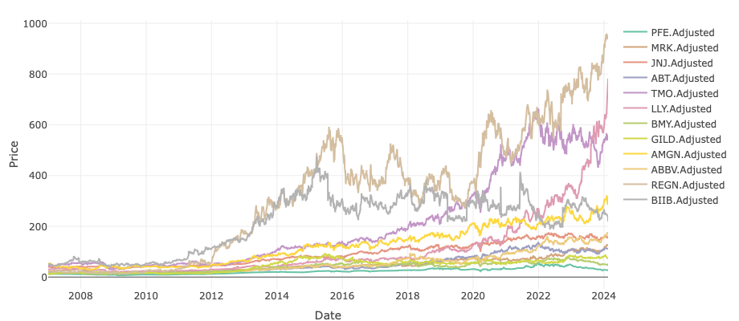
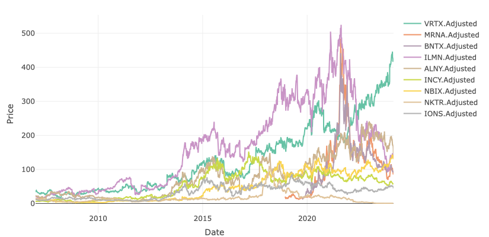
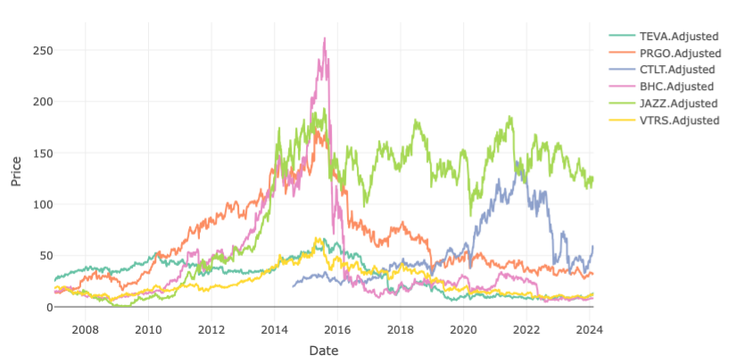
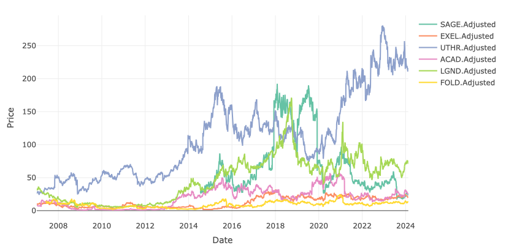
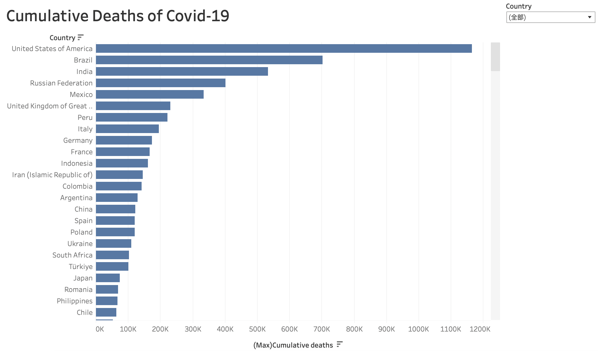

1. Financial/Economy(Healthcare Stocks with Shiny)
You can find the interactive version of this application here.
   
From the charts above, it is evident that nearly all stocks have shown an upward trajectory since 2010, despite some volatility, until they began to decline in 2020. The influence of the pandemic on these trends is also clearly noticeable. Notably, the highest stock prices belong to large pharmaceutical companies, followed by biotechnology firms. These sectors are expected to significantly influence and contribute to the national GDP.
In particular, the stock prices of MRK, PFE, and LLY have been on the rise since 2020. LLY has experienced a marked increase in its stock value in recent years, primarily due to its successful development of the GLP-1 drug, initially aimed at treating diabetes and now also marketed for weight loss. Similarly, PFE and MRNA have seen their stock prices increase following the development of the COVID-19 vaccine, reflecting their gains since 2020.
# Importing the datasetaverage_life_expectancy <-read_xlsx("data/life_expectancy_7countries_2000_2022.xlsx")# Change it to long formataverage_life_expectancy <- average_life_expectancy %>%pivot_longer(cols =-Year, names_to ="Country", values_to ="Life_Expectancy")average_life_expectancy$Year <-as.Date(paste(average_life_expectancy$Year, "01", "01", sep ="-"), format ="%Y-%m-%d")average_life_expectancy$Life_Expectancy <-as.double(average_life_expectancy$Life_Expectancy)# Filter to only include the USaverage_life_expectancy <- average_life_expectancy %>%filter(Country =="United States")
Code
# Plotting the dataaverage_life_expectancy_plot <-ggplot(average_life_expectancy,aes(x = Year, y = Life_Expectancy)) +geom_line(color ='red') +geom_point(color ='red') +labs(title ="Average Life Expectancy in the US",x ="Year",y ="Life Expectancy(years)") +theme(axis.text =element_text(size =11),axis.title =element_text(size =11, face='bold'),title =element_text(size =12, hjust =0.5, face='bold'),panel.background =element_rect(fill ="white"),panel.grid.minor =element_line(color ="gray", linetype ="dotted"),panel.grid.major =element_line(color ="gray", linetype ="dotted") )plotly_life <-ggplotly(average_life_expectancy_plot)plotly_life
An interactive version of this dashboard can be found here.

Code
# Importing the datasetdeath_cancer <-read_xlsx("data/deaths_cancer_us_1950_2019.xlsx")death_heart <-read_xlsx("data/deaths_heart_diseases_us_1950_2019.xlsx")death_diabetes <-read_xlsx("data/deaths_diabetes_us_1950_2019.xlsx")# Merge these three datasetsdeath_major_diseases <-merge(death_cancer, death_heart, by ="Year")death_major_diseases <-merge(death_major_diseases, death_diabetes, by ="Year")# Change Date formatdeath_major_diseases$Year <-as.Date(paste(death_major_diseases$Year, "01", "01", sep ="-"), format ="%Y-%m-%d")death_major_diseases$Death_Cancer <-as.double(death_major_diseases$Death_Cancer)death_major_diseases$Death_Heart_Disease <-as.double(death_major_diseases$Death_Heart_Disease)death_major_diseases$Death_Diabetes <-as.double(death_major_diseases$Death_Diabetes)# Change it to long formatdeath_major_diseases <- death_major_diseases %>%pivot_longer(cols =-Year, names_to ="Disease", values_to ="Deaths")
Code
# Plotting the datadeath_major_diseases_plot <-ggplot(death_major_diseases, aes(x = Year, y = Deaths, color = Disease)) +geom_line() +geom_point(color ='purple') +labs(title ="Deaths of Major Diseases in the US",x ="Year",y ="Number of Deaths(per 100,000)") +theme(axis.text =element_text(size =11), axis.title =element_text(size =11, face='bold'), title =element_text(size =12, hjust =0.5, face='bold'),panel.background =element_rect(fill ="white"), panel.grid.minor =element_line(color ="gray", linetype ="dotted"),panel.grid.major =element_line(color ="gray", linetype ="dotted") )plotly_disease <-ggplotly(death_major_diseases_plot)plotly_disease
Code
# Importing the datasetinfant_mortality <-read_xlsx("data/infant_mortality_rate_us_1990_2021.xlsx")# Change Date formatinfant_mortality$Year <-as.Date(paste(infant_mortality$Year, "01", "01", sep ="-"), format ="%Y-%m-%d")infant_mortality$Infant_Mortality_Rates <-as.double(infant_mortality$Infant_Mortality_Rates)
Code
# Plotting the data, area plotinfant_mortality_plot <-ggplot(infant_mortality, aes(x = Year, y = Infant_Mortality_Rates)) +geom_area(fill ="lightblue", alpha =0.6) +labs(title ="Infant Mortality Rates in the US",x ="Year",y ="Infant Deaths Number(per 1,000 live births)") +theme(axis.text =element_text(size =11), axis.title =element_text(size =11, face='bold'), title =element_text(size =12, hjust =0.5, face='bold'),panel.background =element_rect(fill ="white"), panel.grid.minor =element_line(color ="gray", linetype ="dotted"),panel.grid.major =element_line(color ="gray", linetype ="dotted") )plotly_infant_mortality <-ggplotly(infant_mortality_plot)plotly_infant_mortality
We can observe the public health outcomes of the United States from the graphs above. With improvements in quality of life and advances in medical technology, the average life expectancy in the U.S. has significantly increased over the past few decades, and the number of deaths due to cancer, diabetes, and heart disease has decreased. However, in 2020, there was a significant drop in the average life expectancy of Americans, from 79 to 77 years. We can speculate that this was caused by the COVID-19 pandemic. As shown by the Tableau dashboard, the United States has the highest number of COVID-19 related deaths globally. In addition, the infant mortality rate is also decreasing, but it remains an issue that warrants attention.
# Importing the datasethealth_insurance <-read_xlsx("data/share_of_people_us_without_health_insurance_age_1997_2022.xlsx")# Change Date formathealth_insurance$Year <-as.Date(paste(health_insurance$Year, "01", "01", sep ="-"), format ="%Y-%m-%d")# Change it to long formathealth_insurance <- health_insurance %>%pivot_longer(cols =-Year, names_to ="Age_Group", values_to ="Percentage")
Code
# Plotting the data usea bar plothealth_insurance_plot <-ggplot(health_insurance, aes(x =factor(Year), y = Percentage, fill = Age_Group)) +geom_bar(stat ="identity", position ="dodge") +labs(title ="Health Insurance Uncoverage in the US",x ="Year",y ="Percentage of People without Health Insurance(%)") +theme(axis.text =element_text(size =11), axis.title =element_text(size =11, face='bold'), title =element_text(size =12, hjust =0.5, face='bold'),panel.background =element_rect(fill ="white"), panel.grid.minor =element_line(color ="gray", linetype ="dotted"),panel.grid.major =element_line(color ="gray", linetype ="dotted") )+theme(axis.text.x =element_text(angle =90, vjust =0.5, hjust=1))plotly_health_insurance <-ggplotly(health_insurance_plot)plotly_health_insurance
Code
# Importing the datasetemergency_room <-read_xlsx("data/us_emergency_room_visits_1997_2019_by_age.xlsx")# Change it to long formatemergency_room <- emergency_room %>%pivot_longer(cols =-Year, names_to ="Age_Group", values_to ="Visits_Percent")# Change Date formatemergency_room$Year <-as.Date(paste(emergency_room$Year, "01", "01", sep ="-"), format ="%Y-%m-%d")
Code
# Plotting the data usea bar plotemergency_room_plot <-ggplot(emergency_room, aes(x =factor(Year), y = Visits_Percent, fill = Age_Group)) +geom_bar(stat ="identity", position ="dodge") +labs(title ="Emergency Room Visits in the US",x ="Year",y ="Percentage of People Visited Emergency Room(%)") +theme(axis.text =element_text(size =11), axis.title =element_text(size =11, face='bold'), title =element_text(size =12, hjust =0.5, face='bold'),panel.background =element_rect(fill ="white"), panel.grid.minor =element_line(color ="gray", linetype ="dotted"),panel.grid.major =element_line(color ="gray", linetype ="dotted") ) +theme(axis.text.x =element_text(angle =90, vjust =0.5, hjust=1))plotly_emergency_room <-ggplotly(emergency_room_plot)plotly_emergency_room
The rate of health insurance uncoverage in the United States has been on a decline since 2010, possibly due to the implementation of Barack Obamas health care reforms. However, starting from 2017, the health insurance uncoverage rate began to rise slightly, which may be attributed to the policies of the Trump administration. It is noteworthy that the 18-64 age group has consistently had the highest rate of medical insurance non-coverage among all age groups. Based on the numbers of emergency room visits, those aged 65 and above have always been the group with the highest rate of emergency room visits, while the 45-64 age group has the lowest rate of emergency room visits.
# Importing the datasetprescription_drug <-read_xlsx("data/prescription_drug_expenditure_us_1960_2022.xlsx")# Change Date formatprescription_drug$Year <-as.Date(paste(prescription_drug$Year, "01", "01", sep ="-"), format ="%Y-%m-%d")
Code
# Plotting the data use bar plotprescription_drug_plot <-ggplot(prescription_drug, aes(x =factor(Year), y = Expenditure)) +geom_bar(stat ="identity", position ="dodge") +labs(title ="Prescription Drugs Expenditure in the US",x ="Year",y ="Expenditure(billion dollars)") +theme(axis.text =element_text(size =11), axis.title =element_text(size =11, face='bold'), title =element_text(size =12, hjust =0.5, face='bold'),panel.background =element_rect(fill ="white"), panel.grid.minor =element_line(color ="gray", linetype ="dotted"),panel.grid.major =element_line(color ="gray", linetype ="dotted") ) +theme(axis.text.x =element_text(angle =90, vjust =0.5, hjust=1))plotly_prescription_drug<-ggplotly(prescription_drug_plot)plotly_prescription_drug
Code
# Importing the datasetdrug_development <-read_xlsx("data/pharmaceuticals_cost_of_drug_development_in_the_us_since_1975.xlsx")
Code
# Plotting the data usea bar plotdrug_development_plot <-ggplot(drug_development, aes(x =factor(Year), y = Cost)) +geom_bar(stat ="identity", position ="dodge", fill ='blue') +labs(title ="Costs of Drug Development in the US",x ="Year",y ="Cost(million dollars)") +theme(axis.text =element_text(size =11), axis.title =element_text(size =11, face='bold'), title =element_text(size =12, hjust =0.5, face='bold'),panel.background =element_rect(fill ="white"), panel.grid.minor =element_line(color ="gray", linetype ="dotted"),panel.grid.major =element_line(color ="gray", linetype ="dotted") ) +theme(axis.text.x =element_text(angle =90, vjust =0.5, hjust=1))plotly_drug_development <-ggplotly(drug_development_plot)plotly_drug_development
Note: You can click on the industrys name to observe the specific line. Click again, the graph will be reset.
Code
# Importing the datasetgdp_industry <-read_csv("data/GDP_by_Industry.csv", skip =4) %>%select(-Line)colnames(gdp_industry) <-c("Industry", "2018-Q1", "2018-Q2", "2018-Q3", "2018-Q4", "2019-Q1", "2019-Q2", "2019-Q3", "2019-Q4", "2020-Q1", "2020-Q2", "2020-Q3", "2020-Q4", "2021-Q1", "2021-Q2", "2021-Q3", "2021-Q4", "2022-Q1", "2022-Q2", "2022-Q3", "2022-Q4", "2023-Q1", "2023-Q2", "2023-Q3")gdp_industry <- gdp_industry %>%filter((Industry =="Agriculture, forestry, fishing, and hunting")| (Industry =="Mining")| (Industry =="Utilities")| (Industry =="Construction")| (Industry =="Manufacturing")| (Industry =="Wholesale trade")| (Industry =="Retail trade")| (Industry =="Transportation and warehousing")| (Industry =="Information")| (Industry =="Finance and insurance")| (Industry =="Real estate and rental and leasing")| (Industry =="Professional, scientific, and technical services")| (Industry =="Management of companies and enterprises")| (Industry =="Administrative and waste management services")| (Industry =="Educational services")| (Industry =="Health care and social assistance")| (Industry =="Arts, entertainment, and recreation")| (Industry =="Accommodation and food services")| (Industry =="Other services, except government")| (Industry =="Federal")| (Industry =="State and local") )## Change it to long formatgdp_industry <- gdp_industry %>%pivot_longer(cols =-Industry, names_to ="Date", values_to ="GDP")# Change date to Date formatgdp_industry$Date <-as.yearqtr(gdp_industry$Date, format ="%Y-Q%q")gdp_industry$Date <-as.Date(gdp_industry$Date)gdp_industry$GDP <-as.double(gdp_industry$GDP)gdp_industry <- gdp_industry %>%mutate(year =year(Date) )# Group by year and industrygdp_industry_group <- gdp_industry %>%group_by(year, Industry) %>% dplyr::summarize(GDP =sum(GDP)) %>%ungroup()
Code
# Plotting the datagdp_plot <-ggplot(gdp_industry, aes(x = Date, y = GDP, color = Industry)) +geom_line() +labs(title ="GDP Contribution of Different Industries",x ="Year",y ="GDP (in billions of dollars)") +theme(axis.text =element_text(size =11),axis.title =element_text(size =11, face='bold'),title =element_text(size =12, hjust =0.5, face='bold'),panel.background =element_rect(fill ="white"),panel.grid.minor =element_line(color ="gray", linetype ="dotted"),panel.grid.major =element_line(color ="gray", linetype ="dotted"),legend.position ="bottom" )plotly_gdp <-ggplotly(gdp_plot)plotly_gdp %>%layout(legend =list(title =list(text ='Industry'),itemclick ="toggleothers",itemdoubleclick ="toggle" ))
Prescription drug costs have been increasing over the years. We can also observe that after the COVID-19 pandemic, the increase in prescription drug costs has been greater than before. Meanwhile, the cost of drug development has also been increasing. In the decade from 2000 to 2010, the United States greatly increased its investment in drug development. The GDP contribution of the healthcare industry has been increasing as well, but there was a certain degree of decline in 2020 due to the pandemic. This reflects the economic impact of public health events on the entire healthcare industry. Despite a long-term trend of growth, there may be fluctuations and challenges in the short term.
This trend underlines the complex relationship between public health crises, pharmaceutical economics, and healthcare systems. The increase in prescription drug costs post-pandemic suggests that the healthcare sector is facing increasing pressures, possibly due to supply chain disruptions, increased demand for medical treatments, and the accelerated pace of pharmaceutical innovation in response to the crisis. While the infusion of investment into drug development signals a robust pipeline for new therapies and a strong response to health challenges, it also raises concerns about the sustainability of healthcare financing and the accessibility of new drugs to the general population. The slight dip in the healthcare industrys GDP contribution in 2020 may indicate a temporary retraction or reallocation of resources in the face of the pandemics immediate impacts, yet the overarching trajectory remains one of growth, reflecting the sectors resilience and critical importance.
# Importing the datasetadult_smokers <-read_xlsx("data/number_of_adult_smokers_us_1965_2021.xlsx")# Change Date formatadult_smokers$Year <-as.Date(paste(adult_smokers$Year, "01", "01", sep ="-"), format ="%Y-%m-%d")
Code
# Plotting the data use a line plotadult_smokers_plot <-ggplot(adult_smokers, aes(x = Year, y = Number)) +geom_line(color ='purple') +labs(title ="Number of Adult Smokers in the US",x ="Year",y ="Number of Smokers(million)") +scale_x_date(date_labels ="%Y", date_breaks ="1 years") +theme(axis.text =element_text(size =11), axis.title =element_text(size =11, face='bold'), title =element_text(size =12, hjust =0.5, face='bold'),panel.background =element_rect(fill ="white"), panel.grid.minor =element_line(color ="gray", linetype ="dotted"),panel.grid.major =element_line(color ="gray", linetype ="dotted") ) +theme(axis.text.x =element_text(angle =90, vjust =0.5, hjust=1))plotly_adult_smokers <-ggplotly(adult_smokers_plot)plotly_adult_smokers
Code
# Importing the datasetalcohol_consumption <-read_xlsx("data/per_capita_alcohol_consumption_of_all_beverages_us_1850_2021.xlsx")# Change Date formatalcohol_consumption$Year <-as.Date(paste(alcohol_consumption$Year, "01", "01", sep ="-"), format ="%Y-%m-%d")
Code
# Plotting the data use bar plotalcohol_consumption_plot <-ggplot(alcohol_consumption, aes(x = Year, y = Consumption)) +geom_bar(stat ="identity", position ="dodge", fill ='green') +labs(title ="Alcohol consumption per capita from all beverages in the US",x ="Year",y ="Consumption(gallons of ethanol)") +scale_x_date(date_labels ="%Y", date_breaks ="5 years") +theme(axis.text =element_text(size =11), axis.title =element_text(size =11, face='bold'), title =element_text(size =12, hjust =0.5, face='bold'),panel.background =element_rect(fill ="white"), panel.grid.minor =element_line(color ="gray", linetype ="dotted"),panel.grid.major =element_line(color ="gray", linetype ="dotted") ) +theme(axis.text.x =element_text(angle =90, vjust =0.5, hjust=1))plotly_alcohol_consumption <-ggplotly(alcohol_consumption_plot)plotly_alcohol_consumption
Before 2009, the number of smokers in the United States showed a slight declining trend with some fluctuations. Starting from 2010, there was a sharp decline in the number of smokers. This could be attributed to the passage of The Family Smoking Prevention and Tobacco Control Act by the U.S. government in 2010. The act implemented regulatory measures on tobacco products, including prohibiting advertising and promotional activities for tobacco products, and requiring health warnings on tobacco product packaging. Additionally, the U.S. government imposed high taxes on tobacco products. These measures might have contributed to the decline in the number of smokers.
It can also be observed that alcohol consumption in the United States was on the rise from 1935 to 1980, peaking in 1980. During the period from 1920 to 1933, the United States implemented Alcohol Prohibition, we could speculate a sharp decrease in alcohol consumption. The enactment of Prohibition might have been due to societal concerns over alcohol consumption and moral judgments about alcohol use. After the repeal of Alcohol Prohibition, alcohol consumption showed an upward trend. It is also noted that after reaching a low point in alcohol consumption in 1998, the trend has been increasing in recent years.